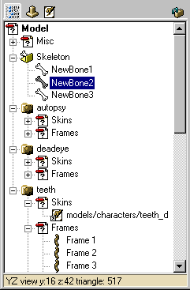
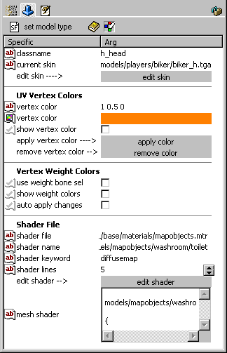
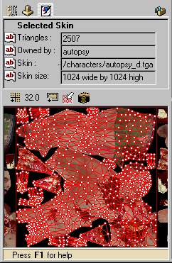

Data-displays
Updated 26 Jul 2009
- QuArK Information Base
- 1. Introduction to QuArK
- 1.6. Model-editor in QuArK
|
|
Data-displays
Updated 26 Jul 2009
|
Upper levels: - QuArK Information Base - 1. Introduction to QuArK - 1.6. Model-editor in QuArK |
|
1.6.9. Data-displays |
[ - - ] |
|
Index |
|
Tree-view (hierarchy-view) |
cdunde - 18 Nov 2008 | [ Top ] |
|
 This view actually contains your model which is broken down in different elements within what are called Component folders, or groups. Each model consist of various categories and some have sub-categories which in turn may have their own sub-items. The categories and items in a models Tree-view are:
One important point here is about the Frames. Each component must contain the same number of frames, arraigned in the same order. They can be moved around to rearrange their order but remember to keep that the same for each one, this is not done automatically by the editor. As new components are added they will be created with the same number and arraignment of frames as the others. You can right-mouse-click on every tree-view object, to get a context-menu, from where you can select different actions. If you wish to enlarge or reduce the Tree-view height, there is a hidden 'drag line' at the very top of the Tree-view, just below the compass. When your curser changes to two bars, with arrows above and below them, you can then hold the left mouse button down and drag the Tree-view to the height you desire. Just below the Tree-view is the Hintbox which displays various information and informs you by displaying Press F1 for help, which you should do, when there is information about a functions use and which in turn usually provides a link to these InfoBase docs section for a more detailed description and information. |
|
Specifics/Args-view |
cdunde - 26 Jul 2009 | [ Top ] |
|

This page is used for a variety of different elements that have a set of
parameters to set, so they act in a certain way. These parameters are called
specifics in QuArK. Each specific can have an argument (arg) attached, or associated, with it. Selecting the Frames folder, a number of frames or a single frame only, will display the frame type page for the specific type of model that is set, if such a page exist. If a single bone is selected it will display the bone's page for that particular bone. Selecting a single component displays its page where you can set a tint color for each component that will be applied over that component's texture and lines when a view's RMB menu item Use Component Colors is active (checked) to help distinguish one component from another. If you do not know what permitted values an arg can have, place your mouse-cursor over that item for a second and a blue 'flyover' help-box will appear, if there is any help for that specific/arg pair. Sometimes there may be a dropdown-listbox which contain valid args, or most used args. Some specifics are only possible to turn on/off, these looks like checkboxes. There might even be pushbuttons which opens another window, with more specific/arg settings. The top bar of icons from left to right are:
The second bar of icons from left to right are:
classname : This shows the name of the selected item causing this page to be displayed. Usually this item's name can be changed to any name you choose in the tree-view by pressing your F2 key. Once Enter is pressed to change the name, it will update the Specifics/Args page. current skin : This is a read only item displaying the path and name of the current skin texture. edit skin : By clicking the gray 'edit skin' button, it will open the above texture image in the external editor that is set to use in QuArK's Configuration External editors section. UV Vertex Colors : This section is used
for color selection, displaying, applying and removing UV vertex coloring. Vertex Weight Colors : This section is used in conjunction with the
Bone's Specifics page
for Vertex Weights. See that page for their descriptions. Shader File : This section is for those model format types that use texture shaders to give different appearances and effects to a model. shader file : This gives the full path and file name that contains the texture shader being used. shader name : This gives the name of the shader being used that is contained in the above file. shader keyword : This displays a keyword, if the current texture has one, to identify it in the above shader. shader lines : This is an adjustable setting for the 'mesh shader' window below to make it larger or smaller by using the arrow buttons to the far right, or an amount entered by hand. edit shader : By clicking the gray 'edit shader' button, it will open the above shader code in the external
editor that is set to use in
QuArK's Configuration External editors section. mesh shader : This is a window that displays the shader code and can be adjusted in size by using the above 'shader lines' entry field. |
|
Skin-view |
cdunde - 29 Oct 2007 | [ Top ] |
|
 This is the view where the models skinning is done. More detail is covered in the Skin-view page section. Triangles : This give the number of triangles that make up the skin mesh or Tris Each triangle has tree drag handles, one at each of its points and that overlap other triangles drag handles. Owned by : This gives the name of the current component of the model that has been selected in the Tree-view of the model editor and is currently available for editing. Skin : This gives the name of the current component's skin of the model that has been selected in the Tree-view of the model editor and is currently being used for the model. A model can have a single component or multiple components. And each component can have a single skin or multiple skins that it can use. Skin size : This gives the actual size of the texture image displayed in pixels or sometimes known as texels. The icons above the texture from left to right:
In the skin texture-view below the icons, there are a number of vertex handles, one for each point of each skin mesh triangle. These handles can be moved and manipulated a number of ways, see the Skin-view page section for more detail and available RMB menus. |
|
Copyright (c) 2009, GNU General Public License by The QuArK (Quake Army Knife) Community - http://quark.sourceforge.net/ |
[ - Top - ] |